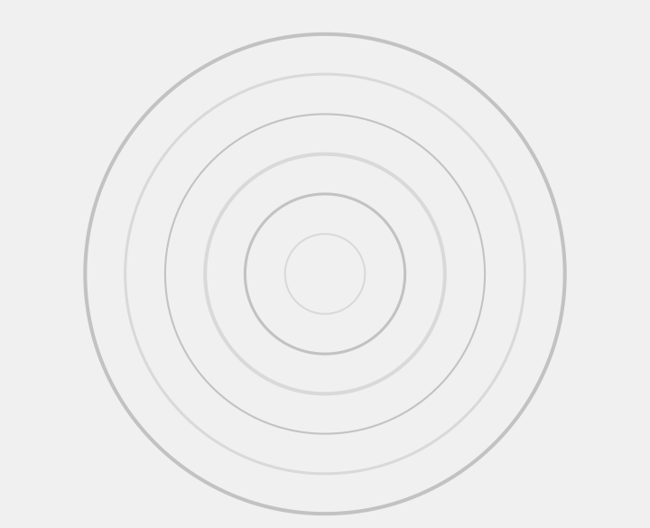
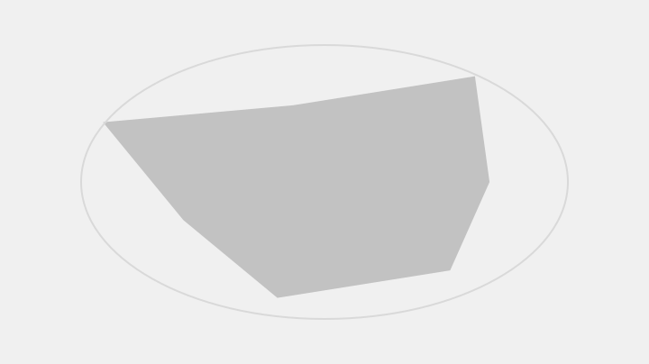
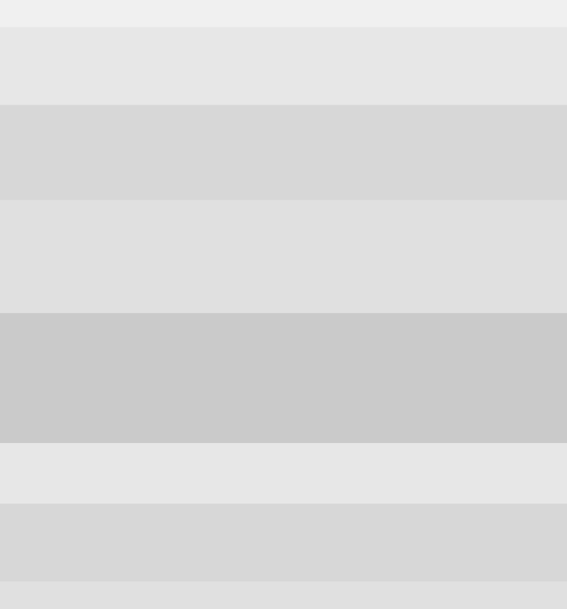
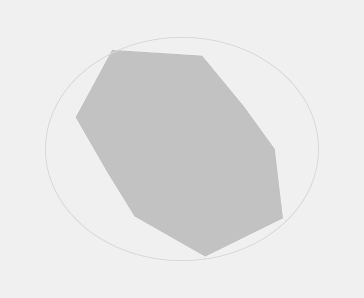
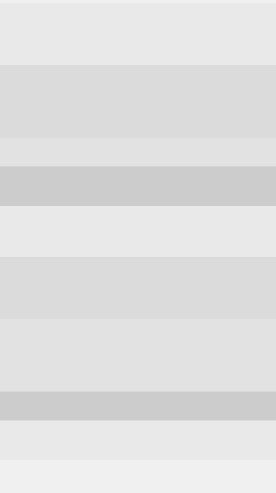
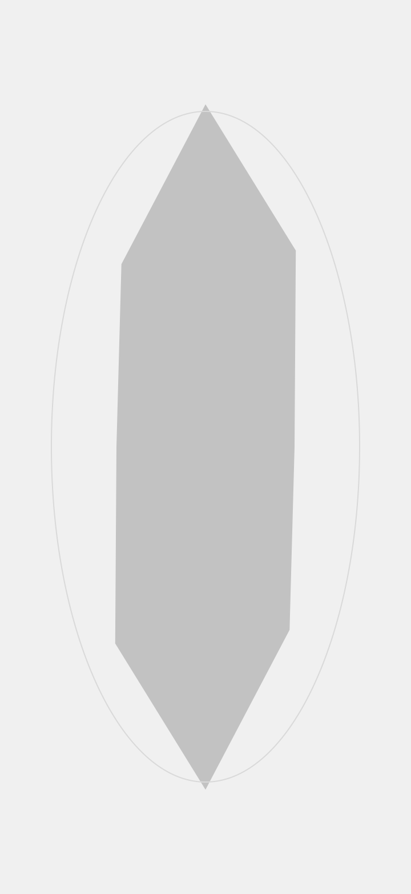
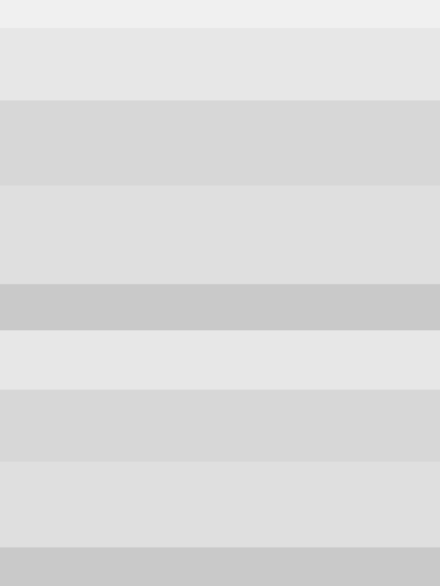

More
Placeholder introduction copy for this page, written to roughly the length of the sentence it stands in for so the layout below it sits at the same height.
Section One
Placeholder copy describing the first group of images on this page.




Section Two
Placeholder copy for the second group.






Section Three
Placeholder copy describing the third and final group of images.